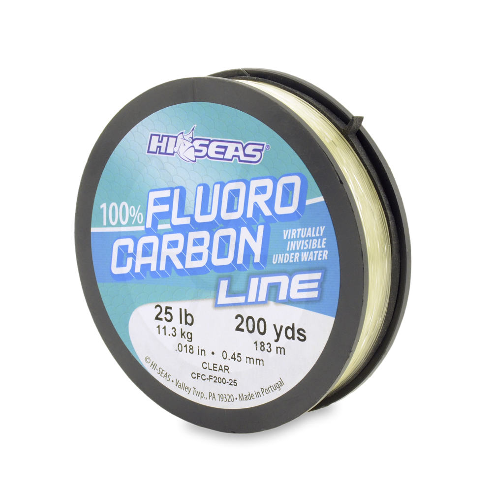

Hi-Seas 100% Fluorocarbon Line
Diameter chart, reel capacity & backing guide

Hi-Seas 100% Fluorocarbon Line is the CFC-F200 mainline family, distinct from the brand's leader-only and coated lines. This limited chart covers the catalog-listed 25 lb Clear filler spool: .018 inch / .45 mm and 200 yards, confirmed by its exact package photo. Retail availability is not verified.
- Construction
- 100% polyvinylidene fluoride (PVDF) fluorocarbon mainline
- Listed strengths
- 25 lb
- Line type
- Fluorocarbon main line
A thicker fluorocarbon working line
The verified 25 lb size is a substantial .45 mm line, so choose it for a tackle and presentation requirement, not merely because a reel can hold it. Consider spool diameter, rod rating and lure weight before selecting a full fluorocarbon fill. The manufacturer also describes terminal-leader use, but a short leader ahead of braid and fluorocarbon carried as the working mainline are different plans.
How much Hi-Seas 100% Fluoro will fit?
Calculated estimates, not measured fills. Stop at the reel manufacturer's fill level even if some line remains.
Hi-Seas Fluorocarbon diameter chart
One verified strength: Clear CFC-F200-25, 25 lb, .018 inch / .45 mm, 200 yards. The 10/12/15/20 lb entries remain excluded because exact shop data conflicts with catalog/photo evidence. A 30 lb CFC-F200 source is not established.
| Strength | Inches | mm | Spools (yd) |
|---|---|---|---|
| 0.018 | 0.450 | 200 |
Choosing your Hi-Seas 100% Fluoro strength
Only 25 lb is included in this chart. Its .018-inch / .45-mm pair appears in the official mainline catalog row and on the exact CFC-F200-25 package; other pound tests must not inherit this diameter.
Choose this physical size only where the rod, hook or lure and fishing conditions justify it. A 25 lb label is not a drag setting or proof that thick fluorocarbon will handle comfortably on a small spinning spool.
The 200-yard label is supplied length. For a shorter working section, retain enough for casts, expected runs and trimming before filling unused volume with backing.
A source-based specification and setup guide, not a hands-on review. The chart is limited to the 25 lb package with matching catalog and photo specifications; current retail stock is not verified.
Want a guided recommendation?
Continue in the Setup WizardSame pound test, different diameters
At your selected strength
Loading diameter comparisons...
What changes with another line?
Nearby diameters in the line database
| Line | Strength | Inches | Difference |
|---|---|---|---|
| Loading line database... | |||
Backing, working line & leaders
Match the CFC-F200-25 label
Confirm 25 lb Clear 100% Fluorocarbon Line and 200 yards. A Hi-Seas leader spool, Quattro product or fluorocarbon-coated Grand Slam line is not the same package.
Choose the useful working length
Compare the reel's capacity at .018 inch with the 200-yard supply. A deliberate working section can sit over backing, with its junction below the line needed for normal casts and fish runs.
Check handling while filling
Use steady winding tension and the reel maker's fill clearance. Stop short of overfilling and check line handling; unused supply is preferable to forcing the whole package onto a smaller spool.
How Much Fits on These Reels?
Estimated full-spool capacity for the Hi-Seas 100% Fluoro strength selected above, with no backing. These are calculated examples, not physical tests or recommendations for every pairing.
Loading capacity estimates...
Hi-Seas 100% Fluoro questions, answered
Why does this chart show only 25 lb?
The exact CFC-F200-25 catalog row and package photo agree. Other strengths either have conflicting manufacturer specifications or lack an exact verified mainline source, so they are not included.
Is the 25 lb package available to buy now?
Stock was not verified. AFW still links the catalog containing this product code, but its individual shop URL returns 404. Confirm the exact package with a seller before ordering.
Is this Hi-Seas fluorocarbon leader?
It is the 200-yard CFC-F200 mainline filler spool. The manufacturer also describes using the material for terminal leaders, but separate Hi-Seas leader products do not supply the specifications for this chart.
Will one 200-yard spool fill my reel?
Compare the exact reel capacity at .018 inch with the supplied length. A short working section may leave room for backing, while a larger reel may need more than one package.
Should I use the 182 m or 183 m label?
Use the agreed 200-yard package length. That converts to 182.88 m, approximately 183 m. The catalog instead prints 182 m; this guide preserves that discrepancy and does not use either companion label to redefine the supplied yardage.
Specifications & sources
Checked September 13, 2026. The 25 lb row is transcribed from page 12 of the 2025-named AFW catalog currently linked by its official download page, and visually corroborated by the exact manufacturer CFC-F200-25 package photo. The PDF metadata says Catalog 2024 and a June 2024 creation date; its filename does not establish a newer measurement. The July 2026 supplement supplies no replacement fluorocarbon table. The individual 25 lb shop URL returns 404. The 10/12/15/20/30 lb sizes are not included; this is not a statement of current stock or an independent diameter measurement.
Calculations use the catalog's listed inch diameters. Published inch and millimeter values may differ slightly because of rounding.
- AFW official catalog download page Current public page links the 2025-named full catalog and the 2026 supplement.
- AFW full catalog: fluorocarbon mainline, page 12 Exact CFC-F200-25 row: 25 lb, .018 inch, .45 mm, 200 yards, Clear filler spool.
- Exact CFC-F200-25 manufacturer package photo product code, test, diameter and yards visibly match the accepted catalog row. The photo prints 183 m, while the catalog prints 182 m; both companion labels are preserved as source evidence.
- AFW 2026 supplement No replacement CFC-F200 fluorocarbon specification table.